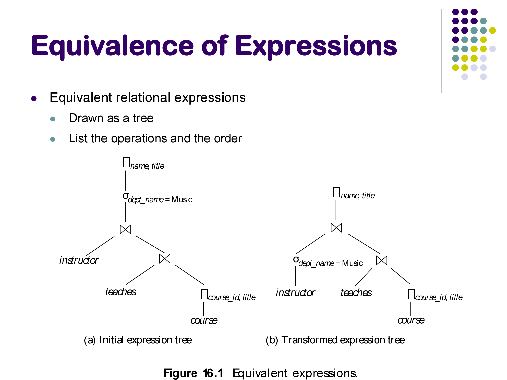
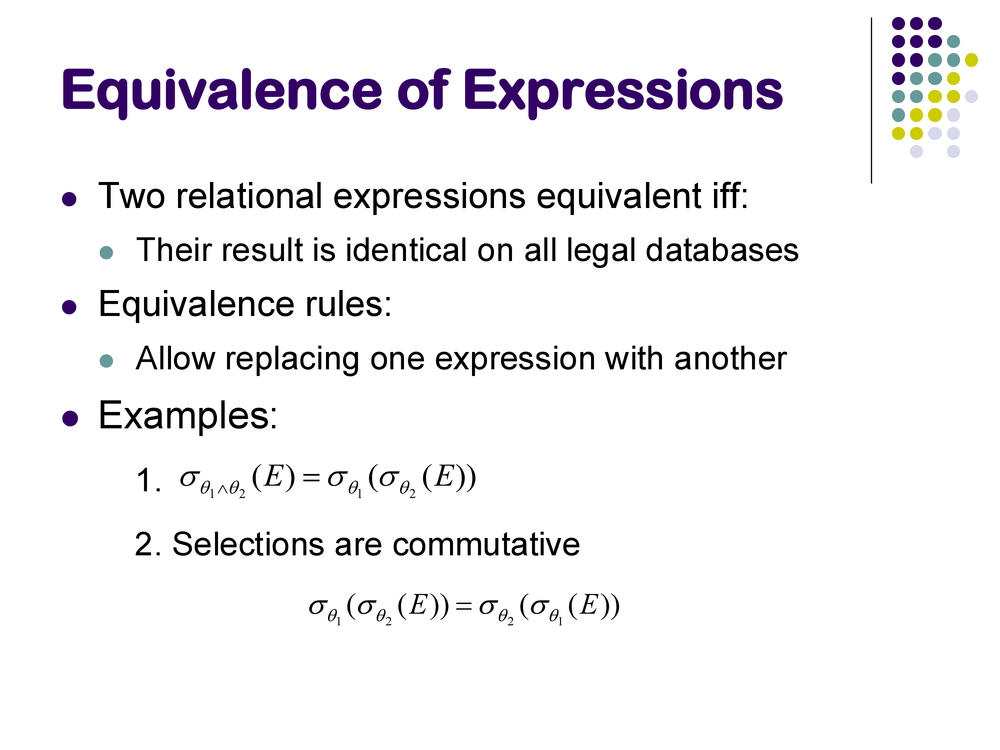
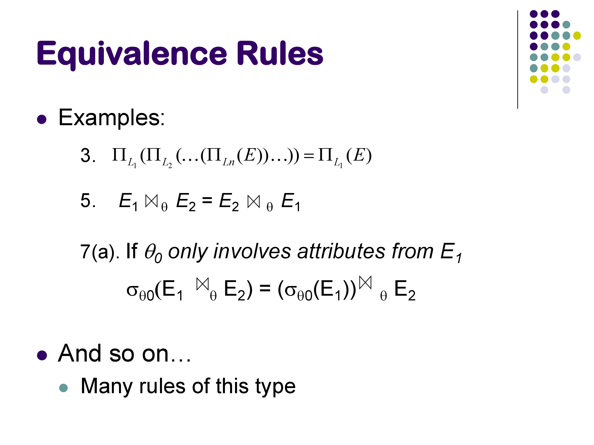
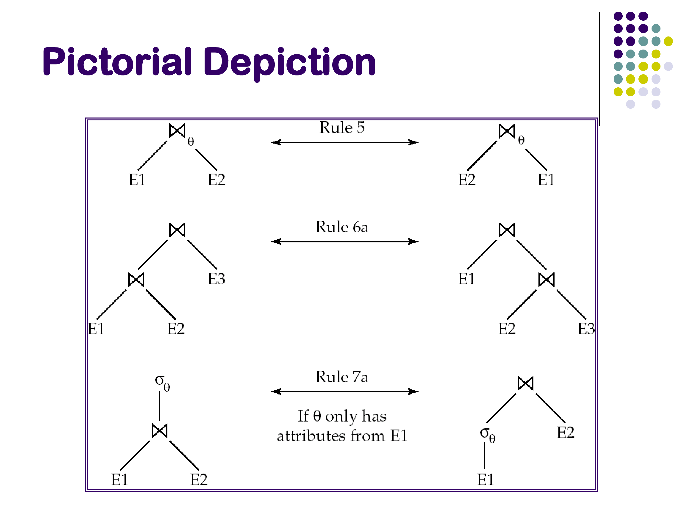
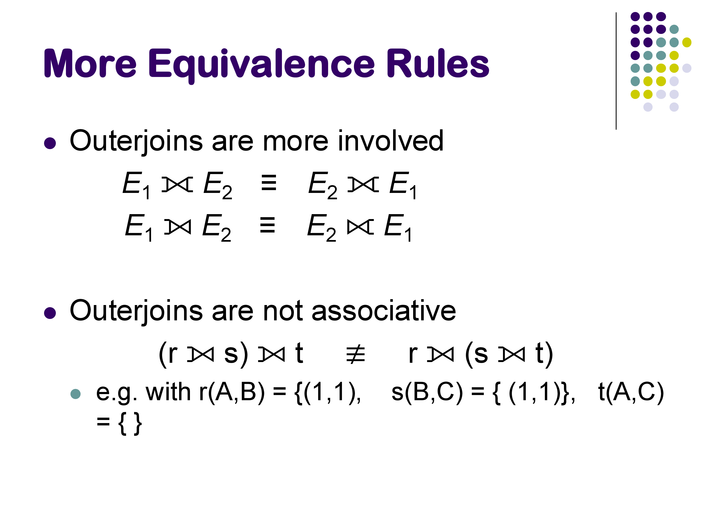
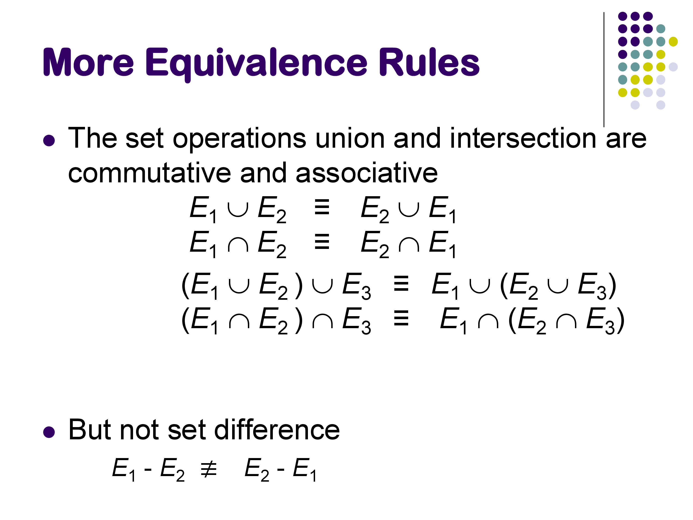
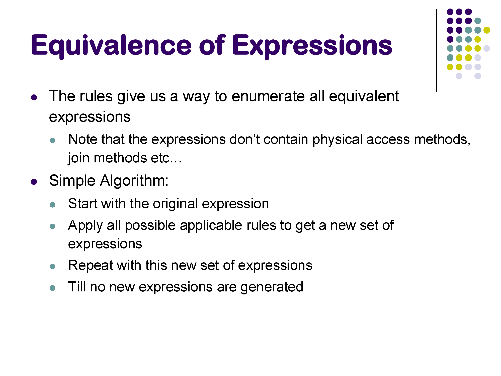
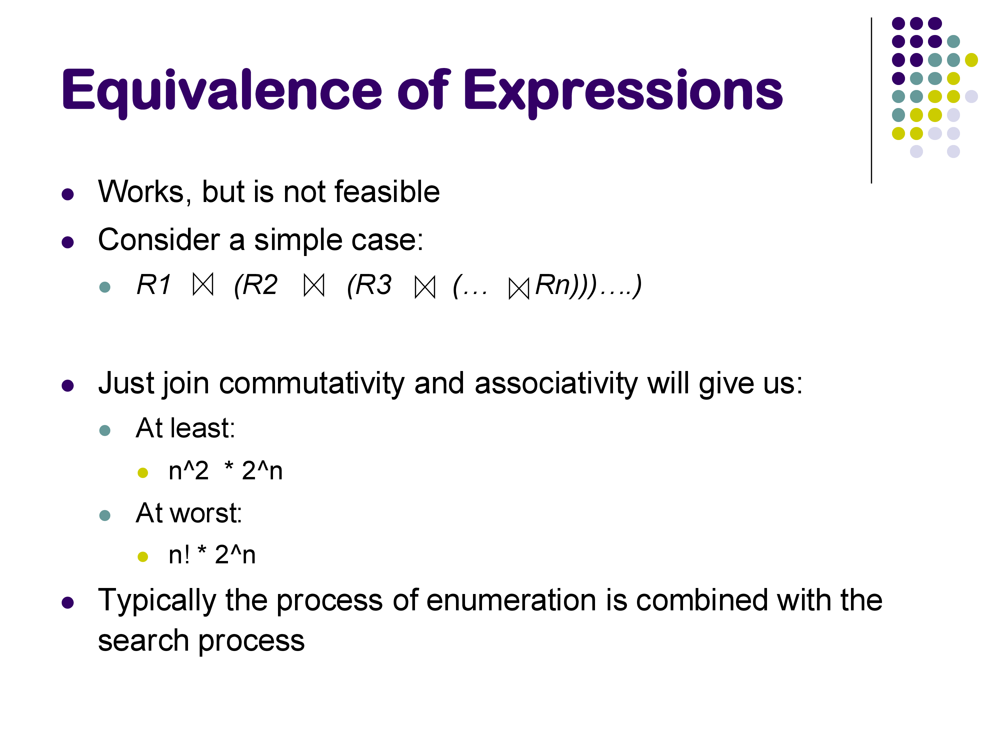

CMSC424: Query Processing — Equivalence of Relational Expressions
Instructor: Amol Deshpande
1. Introduction
The query optimizer’s job is to find the best physical plan for a given SQL query. But before asking “which plan is cheapest?”, it must answer a more fundamental question: when are two query plans equivalent? That is, do they produce the same result on every possible database instance?
This matters because the optimizer transforms the plan the parser hands it into a better one. If that transformation is incorrect — if the rewritten plan produces different results — the database is silently returning wrong answers, which is far worse than returning correct answers slowly. Equivalence must hold not just for the current database state, but for all legal database instances (instances that satisfy the declared constraints: primary keys, foreign keys, etc.), because the database will change as rows are inserted and deleted.
The optimizer reasons about equivalence using a collection of algebraic rewrite rules — transformations on the operator tree that are guaranteed to preserve the query’s meaning. A real optimizer may have hundreds of such rules. Applying them to an initial plan generates a space of equivalent alternatives, from which the optimizer picks the cheapest.

2. What Equivalence Means
Two relational expressions are equivalent if, for every legal database instance, they produce the same set of result tuples (same tuples, same multiplicities). Two plans can look completely different structurally — one might apply a selection before a join, the other after — and still be equivalent.
For example, consider:
SELECT * FROM instructor i JOIN teaches t ON i.id = t.id
WHERE i.dept_name = 'Music';The parser might produce a plan that joins first, then filters. The optimizer might want to filter instructor first, then join. Are these equivalent? For an inner join on i.id = t.id with the predicate only involving instructor attributes, yes — we can prove it holds for all databases. The optimizer can safely use the faster plan.

3. Equivalence Rules for Selections
Rule 1 — Conjunctive selection decomposition: \[\sigma_{\theta_1 \wedge \theta_2}(E) \equiv \sigma_{\theta_1}(\sigma_{\theta_2}(E))\]
A single selection with an AND predicate can be split into two nested selections. This matters because it allows individual sub-predicates to be pushed to different parts of the plan tree, and it enables matching individual sub-predicates against available indexes. For example, if there is an index on attribute B but not A, splitting WHERE A=20 AND B=30 into two separate selections allows the optimizer to use the index for the B predicate.
Note that this rule does not apply to OR predicates: \[\sigma_{\theta_1 \vee \theta_2}(E) \not\equiv \sigma_{\theta_1}(E) \cup \sigma_{\theta_2}(E)\] …at least not in SQL, because SQL preserves duplicates. A tuple satisfying both θ₁ and θ₂ would appear once in the left expression but potentially twice in the union on the right. Under relational algebra (pure sets, no duplicates) the rule holds, but SQL’s multiset semantics break it.
Rule 2 — Commutativity of selection: \[\sigma_{\theta_1}(\sigma_{\theta_2}(E)) \equiv \sigma_{\theta_2}(\sigma_{\theta_1}(E))\]
The order of selections does not matter. Combined with Rule 1, this gives the optimizer full freedom to reorder and redistribute filter conditions.
4. Equivalence Rules for Projections and Joins
Rule 3 — Projection collapsing:
If we apply a sequence of projections, only the outermost (narrowest) one matters — intermediate projections on wider attribute sets are redundant: \[\Pi_{L_1}(\Pi_{L_2}(\cdots \Pi_{L_n}(E)\cdots)) \equiv \Pi_{L_1}(E)\] (provided \(L_1 \subseteq L_2 \subseteq \cdots\), so that \(L_1\) refers only to attributes that exist in E). This allows the optimizer to eliminate unnecessary intermediate projections.
Rule 4 — Commutativity of join: \[E_1 \bowtie_\theta E_2 \equiv E_2 \bowtie_\theta E_1\]
Join is symmetric. Swapping left and right inputs does not change the result. In physical execution, this determines which relation is the build side vs the probe side in a hash join, or which is the outer loop in a nested loops join.
Rule 5 — Associativity of (inner) join: \[(E_1 \bowtie E_2) \bowtie E_3 \equiv E_1 \bowtie (E_2 \bowtie E_3)\]
Joins can be regrouped freely. For a query joining relations R, S, and T, the optimizer can choose to join R⋈S first or S⋈T first. This is the primary source of the join ordering problem — the number of valid groupings grows factorially with the number of relations.

5. Selection Pushdown
Rule 6 — Selection pushdown through join: \[\sigma_{\theta_0}(E_1 \bowtie_\theta E_2) \equiv (\sigma_{\theta_0}(E_1)) \bowtie_\theta E_2 \quad \text{if } \theta_0 \text{ involves only attributes of } E_1\]
If a filter predicate references only one side of a join, it can be applied before the join. This is one of the most important transformations in practice: applying selections early reduces the size of join inputs, which reduces the cost of the join itself.
For example, if E₁ is the instructor relation with 100,000 rows and only 50 music instructors, applying dept_name = 'Music' before the join reduces the join’s left input by a factor of 2,000. The join produces a much smaller intermediate result.

When not to push down. Selection pushdown is a heuristic that is usually correct but not always beneficial. Consider a case where E₁ (the relation being filtered) is very large, but there is a B+-tree index on E₁’s join attribute B, and E₂ is a small relation (say, one tuple). In this scenario, the best plan is an index nested loops join: take the single tuple from E₂, look up the matching rows in E₁ using the index on B, then apply the filter θ₀ to the results.
But if we push θ₀ down first, we may eliminate the possibility of using E₁’s index for the join — the query plan no longer looks like an index lookup. The result could be a hash join on a filtered E₁, which is actually more expensive than the index join in this case.
This is why good optimizers do not blindly apply selection pushdown as a mandatory rewrite. They consider both plans — with and without pushdown — and use cost estimation to choose. This is also why pure heuristic-based optimizers can be fragile.
6. Outer Joins: Commutativity But Not Associativity
Outer joins are more restricted than inner joins. They are commutative in the sense that swapping inputs converts a left outer join to a right outer join: \[E_1 \text{ LEFT OUTER JOIN } E_2 \equiv E_2 \text{ RIGHT OUTER JOIN } E_1\]
However, outer joins are not associative, and selection cannot be freely pushed through an outer join.

Why selection pushdown fails with outer joins. Consider R FULL OUTER JOIN S with a filter A = 10 on attribute A from R. The two expressions: 1. σ_{A=10}(R FULL OUTER JOIN S) 2. (σ_{A=10}(R)) FULL OUTER JOIN S
are not equivalent. A concrete counterexample: suppose R has one tuple (A=20, B=5) and S has one tuple (B=5, C=30). In expression 1, the join produces (20, 5, 30) — which is then filtered out by A=10, leaving only (NULL, 5, 30) from the right outer join part. Wait — actually the full outer join would produce (20, 5, 30) and since there’s a match, no nulls arise, but then the filter removes it. The result is empty.
In expression 2, filtering R first removes the (A=20) tuple, leaving R empty. The full outer join of empty R with S then produces (NULL, 5, 30). The result has one row.
The two expressions produce different results. Selection cannot be pushed through the right side of an outer join, because the outer join specifically exists to surface non-matching tuples — and filtering before the join eliminates tuples that the outer join would have preserved (with NULLs).
The left side is actually fine: pushing a filter that references only the left relation of a LEFT OUTER JOIN works correctly. It is the right side and full outer join that break down. This is the same phenomenon as the SQL query behavior difference between putting a filter in the ON clause versus in a WHERE clause for outer joins — a topic some of you encountered in the assignments.
Why outer joins are not associative. A similar argument applies to join associativity. NULLs introduced by one outer join can change whether a subsequent outer join finds a match, depending on the grouping. The slides contain a worked example.
7. Rules for Set Operations
Union and intersection are commutative and associative: \(E_1 \cup E_2 \equiv E_2 \cup E_1\), and similarly for \(\cap\). Set difference is not commutative: \(E_1 - E_2 \not\equiv E_2 - E_1\).

8. Generating Equivalent Plans — and Why Full Enumeration is Infeasible
Equipped with equivalence rules, an optimizer could enumerate all plans equivalent to the input by repeatedly applying every applicable rule until no new plans emerge:

The problem is scale. With \(n\) relations to join, commutativity and associativity alone generate between \(n! \cdot 2^n\) and \(n^2 \cdot 2^n\) plans at the extreme. For \(n = 10\), 10! exceeds 3.6 million. Adding operator choice (hash join vs sort-merge join vs index join) multiplies this further.

A real query can join 20, 50, or even 100 relations in data warehouse settings — full enumeration is completely infeasible. This is why practical optimizers never enumerate the full space. Instead, they apply equivalence rules selectively, guided by cost estimates, pruning the search space as they go. The specific search algorithms (dynamic programming, heuristics, left-deep plan restriction) will be covered when we discuss the optimization search phase.
9. Summary
Equivalence rules are the algebraic foundation of query optimization. The key rules:
- Conjunctive selection decomposition: AND predicates can be split into nested selections, enabling index matching for individual sub-predicates
- Selection commutativity: filter order doesn’t matter
- Projection collapsing: intermediate projections are redundant
- Join commutativity and associativity: the order and grouping of inner joins can be freely changed — this is the source of the join ordering problem
- Selection pushdown: filters can be moved below joins when they reference only one join input, reducing intermediate result sizes; but this should not be done blindly when indexes are involved
- Outer joins: commutative but not associative; selection cannot be pushed through the right side of an outer join
The optimizer uses these rules to generate candidate plans. Because full enumeration is infeasible, it applies them selectively and uses cost estimation to prune the search. The next set of notes covers how costs and intermediate result sizes are estimated.